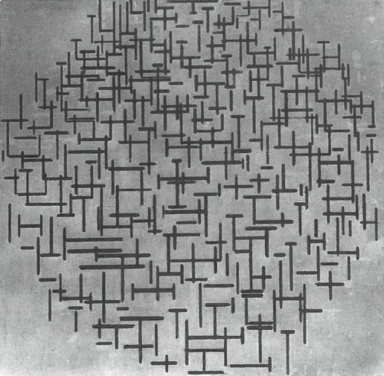

4.
De Stijl, Neo-Plasticism
&
Abstraction
(1914 - 1919)
In 1914, while visiting the Netherlands, Mondrian became unable to return to Paris because of the outbreak of WWI. Mondrian would not return to Paris until 1919.
Divided from the beating heart of the avant-garde, Mondrian nonetheless continued on what had become an historically significant art career. In his new-found enthusiasm for abstraction, Mondrian was representing the cutting-edge of the contemporary painting scene in Europe.
Piet Mondrian, circa WWI
In 1914, Mondrian began a series of "ocean landscape" drawings and paintings.
Piet Mondrian (1914), Pier and Ocean 2
We see in these works a continuation of the grid-like compositional style that Mondrian had developed in Paris.
Piet Mondrian (1914), Ocean 1
However, the sense of calm and centeredness that emerges in these pieces is a far cry from the chaotic, fragmented style of analytical cubism.
Piet Mondrian (1914), Pier and Ocean 4
Piet Mondrian (1914), Ocean 5
Utilizing a simple color palette, these pieces have a powerful sense of minimalism, and their centered compositions and simple symmetry create a sense of harmony.
Piet Mondrian (1915), Pier and Ocean 5 (Sea and Starry Sky)
They were quite unlike anything else in European painting at the time, though Kazimir Malevich was charting somewhat similar waters in Russia.
Kazimir Malevich (1915), Painterly Realism of a Boy with a Knapsack - Color Masses in the Fourth Dimension
The ocean landscape series, similar to Mondrian's earlier "tree" series, show a progression from representationalism to abstraction, as Mondrian simplifies and essentializes the forms in the landscapes.
Piet Mondrian (1915), Pier and Ocean (Composition No. 10)
Cezanne approached figurative painting in much the same way, though not with as extreme results.
Paul Cezanne (1879-1880), Still Life with Fruit Dish
This series reveals much about Mondrian's thinking at the time, as he sought an abstract aesthetic.
In fact, for the next few years of his career, one important aspect of Mondrian's work was that he was essentially stripping away the more cluttered aesthetic of Braques and Picasso, his work becoming increasingly minimalistic and geometrical.

Piet Mondrian (1916), Composition in Line (first state)
Piet Mondrian (1917), Composition in Line (second state)
The ocean landscape series was essentially Mondrian's farewell to figurative painting. From this point onwards, Mondrian almost exclusively produced abstract art, though he did paint figurative paintings on commision for several more years.
It was also at this point that Mondrian began to spend more time writing about art, seeking to explain his aesthetic and its connection to theosophical ideology. Over the next few years, Mondrian would articulate a conception of art as spiritual transcendence, in which the artist (and viewer) grasps higher, non-material realities through painting.
Another important source of inspiration from this time begins when Mondrian moves to the town of Laren at the beginning of 1915.
Here Mondrian's paintings began gaining attention, he establishes important contacts and friendships, as well as greater financial success.
Two painters entered Mondrian's life at this point who he would have fruitful relationships with.
At the end of 1915, he would meet Bart van der Leck, who would influence Mondrian more than any artist after Braques and Picasso.
Bart van der Leck
A showing of Mondrian's recent work also impressed local painter Theo van Doesburg.
Theo van Doesburg
Doesburg, van der Leck and Mondrian were all passionate about art theory and excited to pursue avant-garde painting into new horizons.
Bart van der Leck (1914), The Cat
Mondrian had gained a community of peers, working off each other's ideas and works.
Theo van Doesburg (1914), Girl with Buttercups
Mondrian particularly admired van der Leck's approach to color, and his solid, flat sense of form.
Bart van der Leck (1916), The Tempest
Van der Leck had decided to only use the colors red, blue, yellow (the primary colors), as well as black and white, a stylistic approach that Mondrian would end up adopting, in somewhat modified form.
Piet Mondrian (1916), Composition
Van der Leck, in turn, admired Mondrian's embrace of abstraction, and began reducing references to figurative objects.
Bart van der Leck (1917), Leaving the Factory
Mondrian began coalescing his ideas into an essay: Neo-Plasticism in Pictoral Art, sharing his writing with van der Leck.
Mondrian argued that representation of the natural world in painting was unable to capture the underlying metaphysical unity of reality.
A new style, Neo-Plasticism, reflected an unchanging and pure spiritual reality which transcends the shifting and chaotic material world.
This style, Mondrian believed, must be restricted to rectangular forms, and must only use primary colors and the gray scale.
Piet Mondrian (1917), Composition with Colors B
In equating an underlying spiritual reality with simple geometrical forms, Mondrian's ideas harken back to those of ancient Greek philosophers such as Pythagoras and Plato.
The theosophical movement to which Mondrian adhered also drew heavily on ideas from Plato and the Neo-Platonic philosophical tradition.
Mondrian's spiritualistic conception of art was similar to other pioneers of abstraction, such as Hilma Af Klint, Frantisek Kupka, and Wassily Kandinsky.
Each of these artists believed that abstraction was expedient to unlocking spiritual insight through painting, and each was influenced by theosophy.
Hilma Af Klint (1907), Large Figure Painting nr 5
Frantisek Kupka (1910 - 1913), The First Step
Wassily Kandinsky (1913), Black Strokes 1
In 1917, Theo van Doesburg began publishing an art journal called De Stijl, which included writing from Mondrian, and which would publish Mondrian's writings for several years.
The cover of the first issue of De Stijl
The name De Stijl would eventually come to connote a small but influential movement within Dutch art, of which Mondrian and Doesburg were the two primary exponents.
The De Stijl style reduced painting to basic elements: straight lines, rectangles, the primary colors, and the grey scale.
Doesburg and Mondrian believed this style to be the necessary outcome of modern painting, and sought to establish a new orthodoxy of minimalist geometry.
Piet Mondrian (1917), Composition with Color Fields
Theo van Doesburg (1917), Composition IV, Opus 18
Bart van der Leck (1921), Still Life (with Apples)
Vilmos Huszár (1918), Composition with Female Figure
De Stijl was primarily a painting style,
but it would also influence design...
Gerrit Rietveld (1917), Red and Blue Chair
... and architecture.
Jacobus Oud (1927), Gallery House at Weissenhof Estate
De Stijl also arrived at a time when geometrical abstraction began to blow up across Europe, including in Russia where Kazimir Malevich and the constructivist movement embraced aesthetics semi-adjacent to De Stijl.
Kazimir Malevich (1915), Suprematism, 18th Construction
Kazimir Malevich (1915), Suprematist Composition with Plane in Projection
Alexander Rodchenko (1919), Non-Objective Painting
El Lissitzky (1920 / 1921), Proun 19D
El Lissitzky (1920 - 1921), The New Man
Mondrian and his circle were extremely serious about the historical significance of their work, and both van der Leck and Doesburg would eventually come into personal conflict with Mondrian because of differences in aesthetic vision.
Van der Leck eventually took issue with Mondrian's increasing use of black lines and grid compositions.
Piet Mondrian (1918), Composition with Grid 2
Mondrian criticized both van der Leck and Doesburg for the apparently unpardonable sin of using diagonal lines...
Theo van Doesburg (1925), Counter-Composition V
Bart van der Leck (1916), Composition 1916 no.4
... though Mondrian did think it was appropriate to hang a canvas diagonally.
Piet Mondrian (1919), Composition with Grid 4
Such was the passion and stubborness of modernist artists who believed their work could revolutionize the world.
Ultimately, modernist artists tended to subscribe to 19th century European conceptions of historical progress and inevitability, a mode of thinking seen in the works of philosophers such as Georg W.F. Hegel, Karl Marx, August Comte, and Herbert Spencer, among many others.
The modernist avant-garde were deconstructing every facet of traditional European painting, overthrowing a tradition that stretched back to the Renaissance.
The crisis of WWI sent modernism into over-drive, as many artists saw the war as an indication that European society was corrupt and problematic, and that only by revolutionizing aesthetics could modern ideals be truly realized.
Piet Mondrian is an important example of the somewhat dogmatic and reductive thinking that modernism could espouse, as it evangelized a new aesthetic as the fulfillment of a necessary historical process, while simultaneously decrying any art that deviated from this aesthetic, a conception of art that would later come under heavy criticism within post-modern ideology.
For Mondrian, the key to modern painting was to reject the material world in favor of the spiritual, and he believed that only the most rigid abstract aesthetic could accomplish this goal.
Piet Mondrian (1918), Composition with Grid 1
However, he was still unsatisfied with his work, his approach as yet did not meet his criteria.
Piet Mondrian (1919), Composition with Grid IX
The style that would perfectly capture Mondrian's conception of spiritual purity had yet to fully emerge.
Piet Mondrian (1919), Composition with Color Planes and Gray Lines
In 1919, the war over, Mondrian returned to Paris. His friendship with van der Leck seems to have ended bitterly, with aesthetic theory being the source of unhappiness. But Mondrian returned to Paris with almost five years behind him of exploring the path that analytical cubism had originally set him on. He was just on the edge of discovering the style he had been searching for, and for which he would become famous.